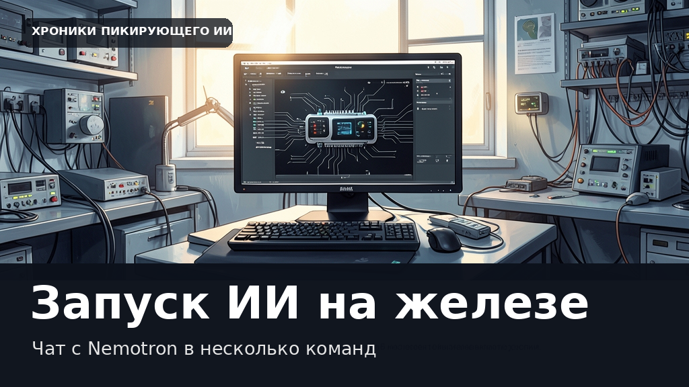

NVIDIA выпустила инструмент для запуска ИИ на железе: чат с Nemotron в несколько команд
Этот текст и иллюстрация созданы автоматически. В статье могут быть неточности; это не опубликованная редакционная новость.

Эпоха искусственного интеллекта постепенно уходит из дата-центров в сторону компактных устройств и встраиваемых систем. Разработчикам, которые создают умных роботов, бортовые компьютеры для беспилотников или медицинские сканеры, приходится удерживать работу моделей в жестких рамках доступной памяти и энергопотребления. При этом запуск тяжелых языковых моделей традиционно требует долгой подготовки инфраструктуры. Компания NVIDIA представила новую утилиту TensorRT Edge-LLM и обновленную платформу DGX Spark с 64 ГБ памяти, которая позволяет разворачивать локальные нейросети буквально в несколько кликов.
Главным инструментом в новой системе стал интерфейс командной строки trtedge. С его помощью можно автоматически скачивать нужные веса и собирать оптимизированные движки TensorRT для работы на嵌入ных устройствах. Во время демонстрации разработчики запустили текстовую модель NVIDIA Nemotron-3.5 Lightning на 30 миллиардов параметров прямо на рабочей станции Spark. После скачивания файлов система разворачивает локальный сервер с поддержкой API, совместимого с OpenAI, что избавляет от необходимости писать сложный обвязочный код для прототипирования приложений.
Для ускорения генерации текста в систему встроили механизм спекулятивного декодирования DSpark. Использование трех дополнительных токенов прогноза позволило поднять среднюю скорость работы с 73,4 до 126,9 токена в секунду на стандартных тестах HumanEval, причем пиковое потребление памяти при этом не превышает 27,9 ГБ. Такой инструмент заметно упрощает жизнь инженерам, которым больше не нужно вручную собирать сложные среды для тестирования языковых моделей на «железе».
Дата объявления в RSS: 2026-10-30. Дата черновика: 2026-10-31.